Unterwegs im Kiez
Wann immer es passt, verbringen wir Zeit draußen - auf dem großen Spielplatz direkt gegenüber und im Friedrichshainer Kiez. Bewegung, frische Luft und kleine Abenteuer sind ein fester Teil unseres Alltags.
Kinderladen im Rudolfkiez
Klein im Hain ist ein Kinderladen für rund 20 Kinder von eins bis sechs Jahren, mitten im Rudolfkiez in Friedrichshain zwischen Ostkreuz und Warschauer Straße. Direkt gegenüber liegt der „Rudi“ - unser Spielplatz vor der Haustür. Mit seinen verschiedenen Spielbereichen, dem Drachenhügel und viel Platz zum Klettern, Buddeln und Entdecken ist er ein besonderer Teil unseres Kita-Alltags.
Wir sind ein kleiner, familiärer Ort, an dem Kinder sich sicher fühlen und in ihrem eigenen Tempo wachsen können.
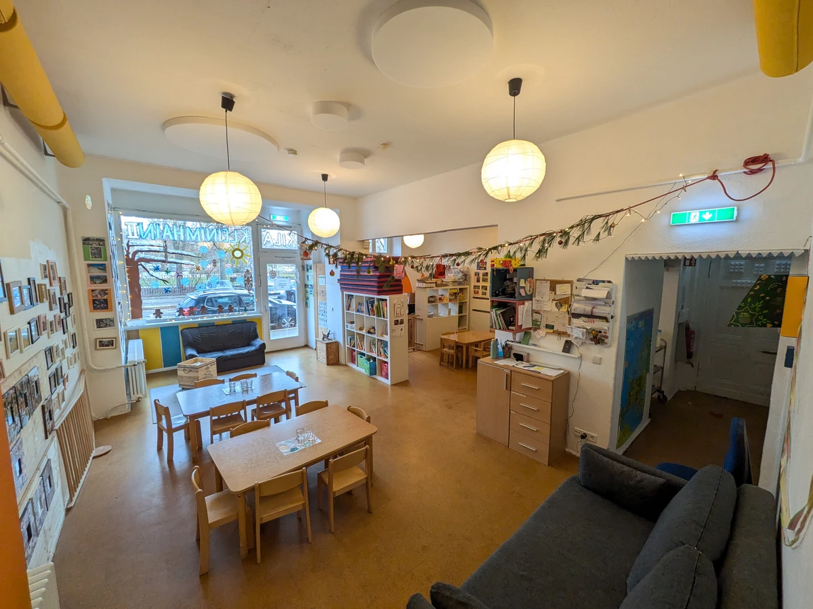
Unser Alltag
Bei uns wird gebaut, gelesen, gemalt, gebastelt, experimentiert, gegessen, gespielt und ausgeruht. In der altersgemischten Gruppe erleben Kinder, wie Gemeinschaft funktioniert: Ideen teilen, Rücksicht nehmen, Konflikte klären und füreinander da sein.
Klare Regeln und vertraute Abläufe geben Orientierung. Gleichzeitig bleibt genug Raum, um Dinge selbst auszuprobieren, Freundschaften zu schließen und selbstständig zu werden.
Wann immer es passt, verbringen wir Zeit draußen - auf dem großen Spielplatz direkt gegenüber und im Friedrichshainer Kiez. Bewegung, frische Luft und kleine Abenteuer sind ein fester Teil unseres Alltags.
Im Schulgarten im Kiez pflegen wir unser eigenes Beet. Die Kinder säen, gießen, beobachten und ernten. Dabei erleben sie, wo Lebensmittel wachsen, übernehmen Verantwortung und lernen, dass manches Zeit braucht.
Ganz nebenbei stärken sie ihre Neugier für Natur, ihr Durchhaltevermögen und die Freude daran, gemeinsam etwas entstehen zu lassen.
Einmal in der Woche gibt es bei uns ein musikalisches Angebot. Gemeinsam wird gesungen, geklatscht, gespielt und zugehört.
Musik fördert Rhythmusgefühl, Sprache und Ausdruck. Sie stärkt das Selbstvertrauen und zeigt den Kindern, wie schön es ist, aufeinander zu hören und gemeinsam etwas zu gestalten.
Mittags essen wir gemeinsam vegetarische Bio-Küche, möglichst regional und saisonal. Essen ist ein fester Moment zum Erzählen, Probieren und Zusammensein.
Ankommen
Der erste Kita-Tag ist ein großer Schritt. Deshalb gestalten wir die Eingewöhnung behutsam, individuell und in engem Austausch mit euch.
Euer Kind bekommt die Zeit, die es braucht, um Vertrauen zu fassen. Ihr wisst, was passiert, seid einbezogen und habt immer Menschen, mit denen ihr sprechen könnt.
So wird aus einem ersten Besuch Schritt für Schritt ein vertrauter Alltag.
Elterninitiative
Klein im Hain lebt von einer engagierten Elternschaft. Eltern und Team sprechen direkt miteinander, bringen Ideen zusammen und übernehmen Verantwortung für den Kinderladen.
Die Aufgaben sind klar verteilt, fair organisiert und an eure Kapazitäten angepasst. Sie sollen in den Familienalltag passen - nicht ihn bestimmen. Wer eine Aufgabe wechseln möchte, kann das jederzeit tun.
Team & Räume
Unser Kernteam arbeitet seit vielen Jahren eng zusammen und ist gut eingespielt. Das schafft Verlässlichkeit im Alltag, eine gemeinsame Haltung und vertraute Gesichter für Kinder und Eltern.
Die Kinder werden aufmerksam, klar und herzlich begleitet. Grenzen setzen wir, wenn sie nötig sind, hören zu und schauen genau hin, was jedes Kind braucht.
Auch beim Bringen und Abholen bleibt Zeit für persönliche Tür-und-Angel-Gespräche. So gehen die kleinen und großen Themen des Tages nicht unter.
Zum festen Team gehören zwei Erzieher und eine Erziehungswissenschaftlerin: Philipp ist seit 2013 dabei und hat Klein im Hain mit aufgebaut. Basti gehört seit 2018 zum Team. Anna hat den Kinderladen lange als Werkstudentin unterstützt und ist inzwischen fest dabei.
Unterstützt wird der Kinderladen außerdem von Praktikant*innen sowie Menschen im FSJ oder BFD.
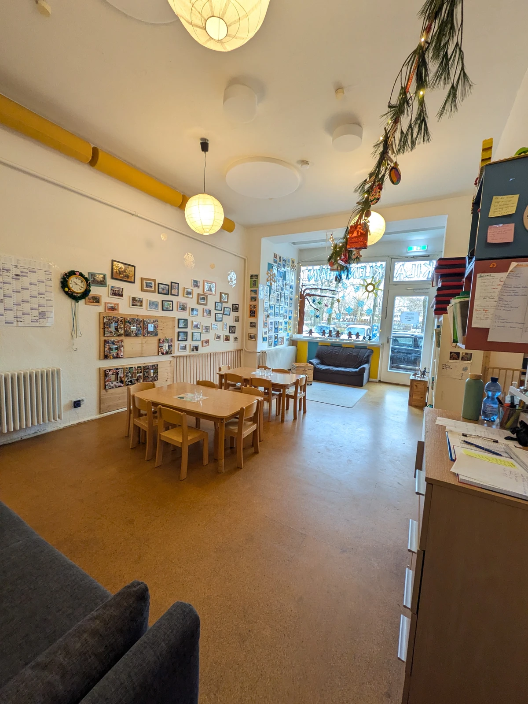
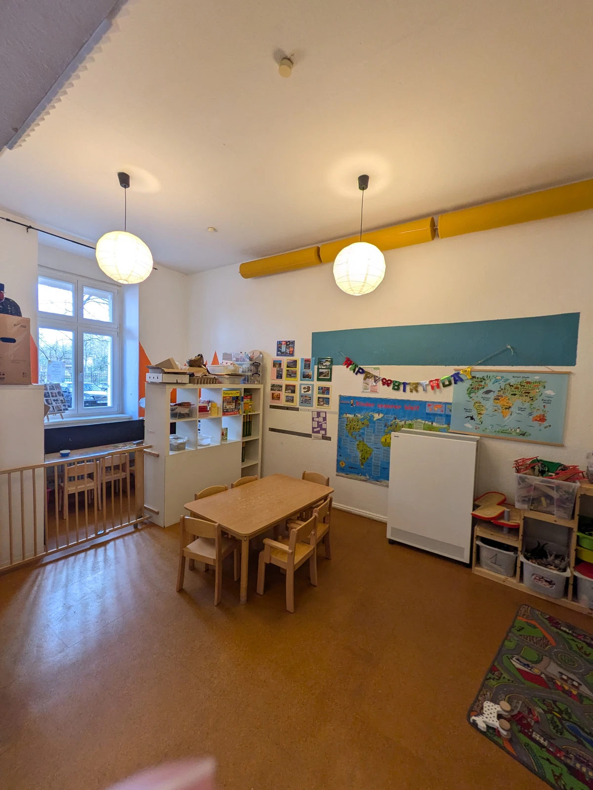
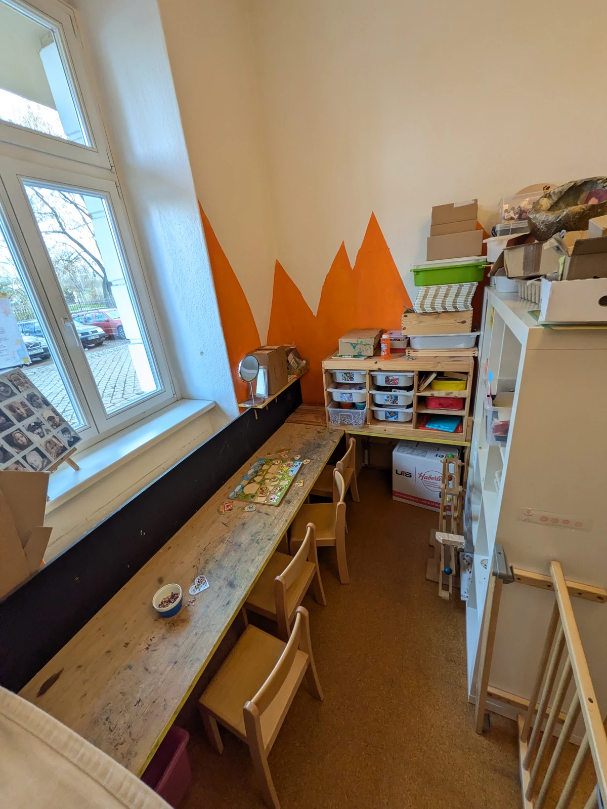
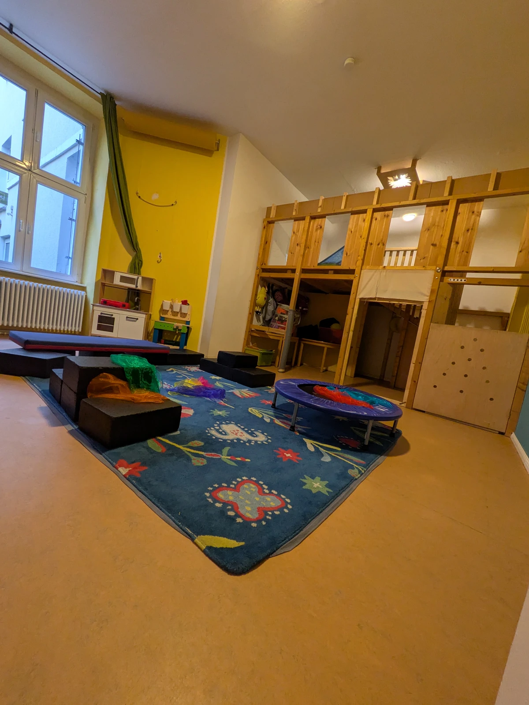
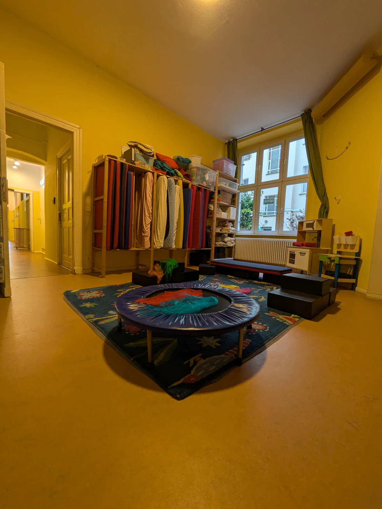
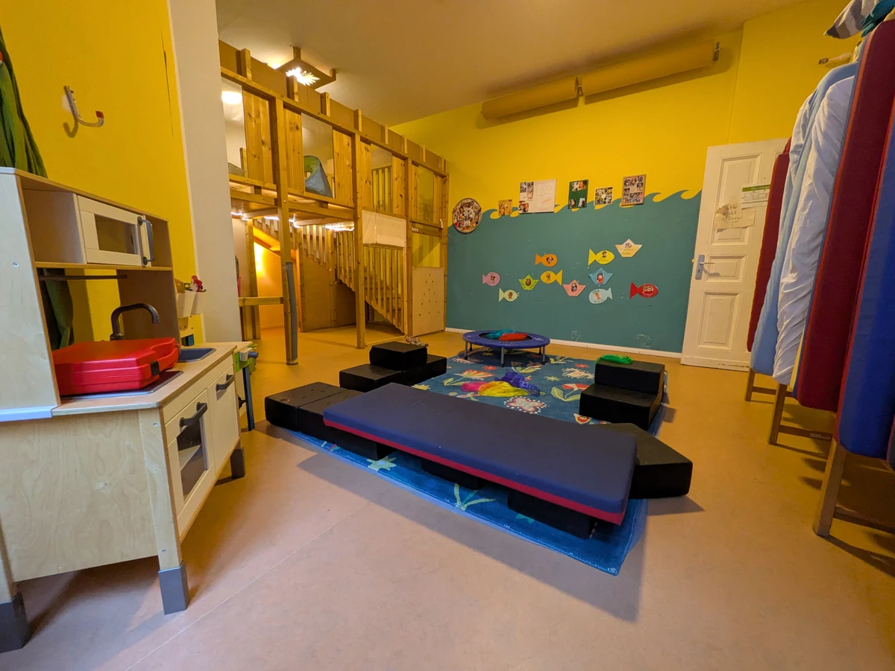
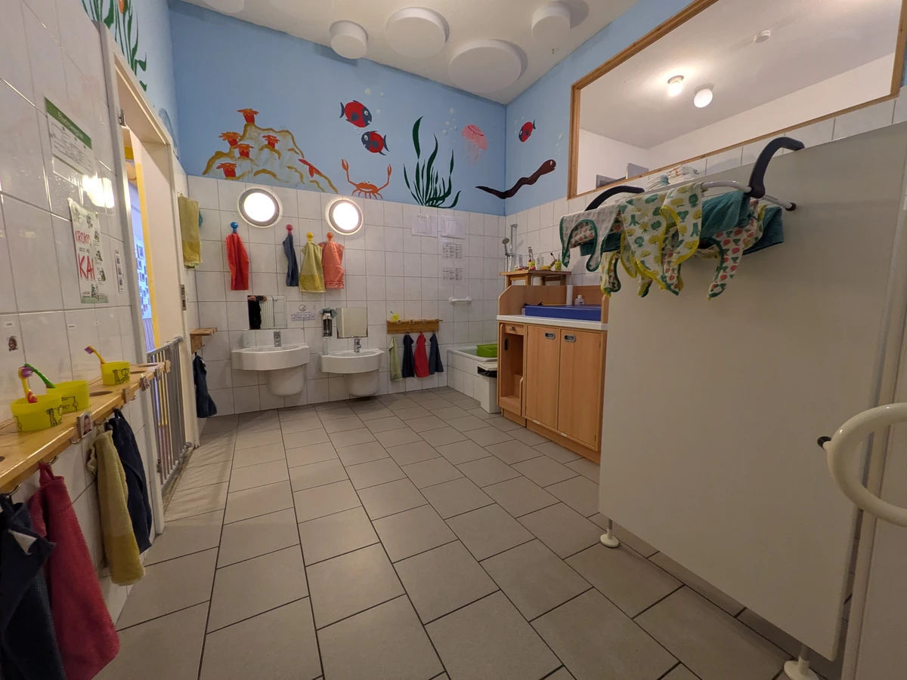
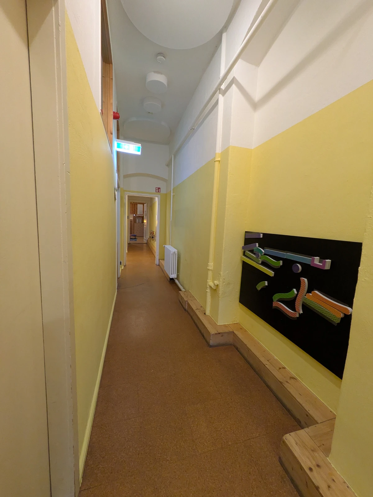
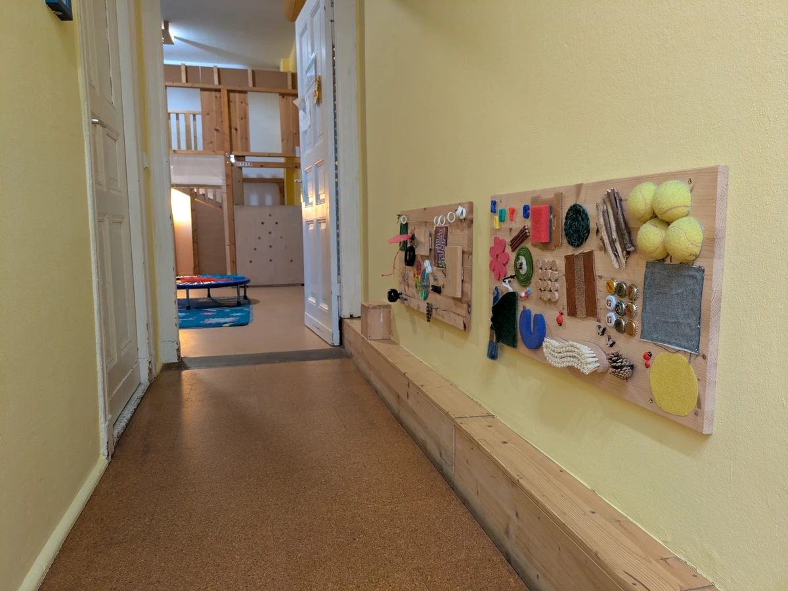
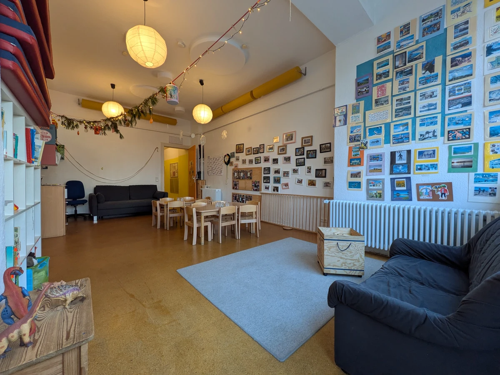
Bild 1 von 11: Heller Gruppenraum im Kinderladen Klein im Hain
Unsere großzügigen Räume sind so gestaltet, dass Kinder hier spielen, entdecken und zur Ruhe kommen können. Sowohl die Kleinen als auch die Größeren finden Platz für gemeinsames Spiel und Möglichkeiten, sich zurückzuziehen.
Im vorderen Raum beginnt vieles gemeinsam: An den kleinen Tischen wird gegessen, gemalt und gebastelt. Daneben ist Platz zum Bauen und für gemeinsames Spiel. In der Leseecke kann man es sich mit einem Buch gemütlich machen, während die Forscherecke zum genauen Hinschauen einlädt - mit Lupen, Mikroskopen und Materialien zum Ausprobieren.
Der hintere Raum bietet viel Platz, um eigene Welten entstehen zu lassen. Hier wird gebaut und umgebaut, geplant und wieder verworfen. Aus Ideen entstehen Bauwerke, Geschichten und Rollenspiele, die die Kinder gemeinsam weiterentwickeln. Die Hochebene wird mal zur Höhle, mal zum Aussichtspunkt, mal zum Rückzugsort.
Zur Mittagszeit verwandelt sich der Raum in einen gemütlichen Schlafbereich.
Freie Plätze
Wir betreuen Kinder von eins bis sechs Jahren in einer kleinen, altersgemischten Gruppe.
Klein im Hain passt zu Familien, denen ein Miteinander auf Augenhöhe wichtig ist und die ihren Kinderladen mitgestalten möchten.
Wir freuen uns, eure Familie kennenzulernen.
Mitmachen
Du möchtest erfahren, ob die Arbeit mit Kindern zu dir passt?
Bei Klein im Hain begleitest du Kinder im Alltag, bringst eigene Ideen ein und sammelst Erfahrung in einem kleinen Team.
Ob Praktikum, Freiwilliges Soziales Jahr (FSJ) oder Bundesfreiwilligendienst (BFD): Wir freuen uns über Menschen, die neugierig sind und Verantwortung übernehmen möchten.
Schick uns ein kurzes Motivationsschreiben und deinen Lebenslauf an KIH5858@gmail.com.
FAQ
Meldet euch gern per E-Mail oder Telefon. Wir informieren euch über die aktuelle Platzsituation und besprechen alles Weitere persönlich.
Wir betreuen rund 20 Kinder im Alter von eins bis sechs Jahren.
Am Rudolfplatz 5 in 10245 Berlin-Friedrichshain - im Rudolfkiez, nahe Ostkreuz und Boxhagener Platz.
Wir richten uns nach dem Tempo eures Kindes und gestalten den Start in engem Austausch mit euch.
Die Aufgaben sind klar verteilt und richten sich nach euren zeitlichen Möglichkeiten und Interessen. Sie bleiben überschaubar und können bei Bedarf gewechselt werden.
Eine kleine Gruppe, verlässliche Beziehungen und eine Gemeinschaft, in der Kinder, Eltern und Team einander kennen.
Kontakt
Ihr möchtet wissen, ob Klein im Hain zu eurer Familie passt? Ruft an oder schreibt uns. Wir freuen uns auf euch.